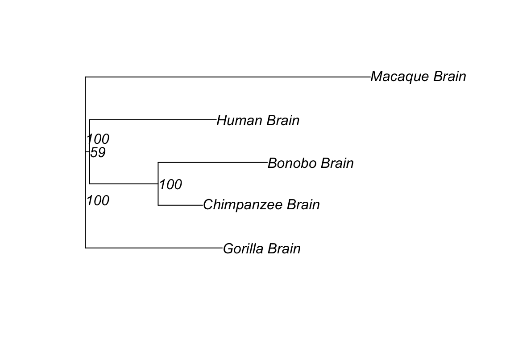
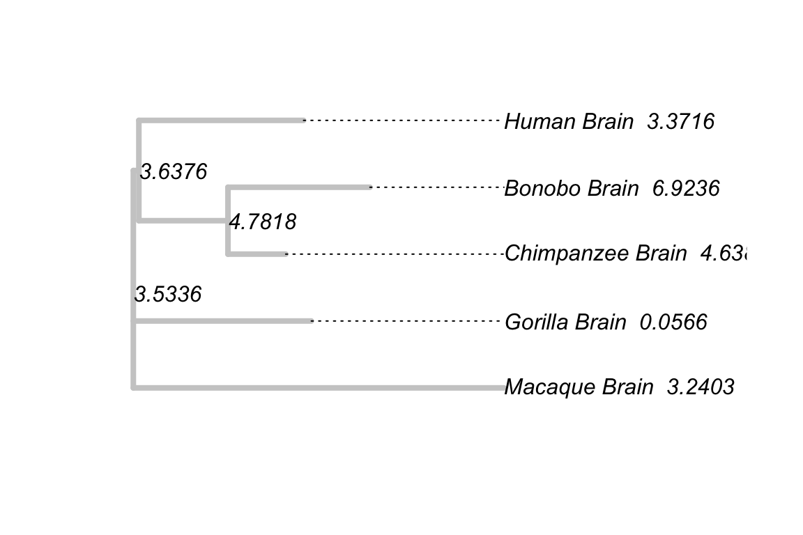

Chapter 6 Ancestral Transcriptome Inference
6.1 Theory
The empirical Bayesian method for ancestral expression inference along a phylogeny is illustrated in Figure 3A. While the theoretical foundation has been well formulated by the work of (Gu 2004) based on the Brownian motion (BM) model, some updates and refinements are necessary before the Ornstein-Uhlenbeck (OU) model that is biologically more realistic,e.g.,(Bedford and Hartl 2009).
6.1.1 From Brownian Motion (BM) model to Ornstein-Uhlenbeck (OU) model
Let \(X\) be the expression level of a gene. Brownian motion is the simplest model to describe changes in gene expression between orthologous genes, in which the degree of stochastic change away from the current state is independent of both state and time. It is well-known that the probability density function of a Brownian motion is given by \[p\left(x\mid x_0,\ \sigma^{2t}\right)\tag{4.1}\] where \(x_0\) is the state of the process at time 0. In the evolutionary context, \(\sigma^{2}\) describes the rate of expression divergence only driven by the mutational effects, which corresponds to the case of selective neutrality.
As the basic model, the notion of optimal expression claims that stabilizing selection, which maintains the optima under the background of random mutations, dominates the transcriptome evolution (Hansen and Martins 1996). For instance, under-expression of metabolic enzymes may slow the metabolic flux, while over-expression may expose the cell to additional toxic misfolded proteins. Following the most common practice, the stabilizing selection on the expression of a gene (\(x\)) satisfies a Gaussian-like fitness,
\[f\left(x\right)=e^{-\frac{\omega\left(x-\mu\right)^2}{2}}\tag{4.2}\] where \(\mu\) is the optimal value, \(\omega\) is the coefficient of stabilizing selection; a large \(\omega\) means a strong selection pressure, and vice versa. Treating \(f\left(x\right)\) as the cost function, one can mathematically show that the evolution of \(X\) follows an Ornstein-Uhlenbeck (OU) stochastic process. That is, given the initial expression value $x_$0, the OU model predicts that \(x\left(t\right)\), the values of \(X\) after \(t\) evolutionary time units, follows a normal distribution with the following mean \(E\left[x|x_0\right]\) and variance \(V\left(x|x_0\right)\)
\[ \begin{split} E\left[x|x_0\right]&=\mu\left(1-e^{-\beta t}\right)+x_0e^{-\beta t}\\ V\left(x|x_0\right)&=1-\frac{e^{-2\beta t}}{W} \end{split}\tag{4.3} \] respectively, where the rate of expression evolution \(\beta=W\sigma{2}\), and \(W=4Ne\omega\); \(Ne\) is the effective population size(Gu 2004 Hansen and Martins (1996)). Hence, an OU model can be concisely represented by \(OU\left(x\mid x_0;\ t,\ \beta,\ W\right)\). Intuitively speaking, an OU process can be thought of as adding an elastic spring to a Brownian motion. As random mutations push the gene expression farther away from this fixed optimum, the strength of elastic return increases proportionally.
6.1.2 The OU model under a phylogeny
Given the expression level (\(x_0\)) at the root O of a known phylogeny with n species, the joint density of expression levels of a gene, \(\boldsymbol{x}=(x_1,\cdots,x_n)\), is denoted by \(P\left(\boldsymbol{x}\right)\). It has been shown (Hansen and Martins 1996) that it follows a multi-variate normal distribution, that is, \(P\left(\boldsymbol{x}\right)=N\left(\boldsymbol{x};\ \boldsymbol{\mu},\ \boldsymbol{V}\right)\), or explicitly
\[P\left(\boldsymbol{x}\right)=\frac{1}{\left(\sqrt{2\pi}\right)^n\left|\boldsymbol{V}\right|^{\frac{1}{2}}}\exp\left\{-\frac{\left(\boldsymbol{x}-\boldsymbol{\mu}\right)'\boldsymbol{V}^{\left\{-1\right\}}\left(\boldsymbol{x}-\boldsymbol{\mu}\right)}{2}\right\}\tag{4.4}\]
where the mean vector (\(\boldsymbol{\mu}\)) and the variance-covariance matrix (\(\boldsymbol{V}\)) depends on the phylogenetic structure, branch lengths, rates of expression evolution and the initial expression level (\(x_0\)) at root \(O\).
Figure 6.1: Figure3. The schematic of ancestral expression inference along a phylogeny
6.1.3 Ancestral gene expression inference: an empirical Bayesian approach
Our approach provides an empirical Bayesian procedure to infer the expression states of ancestral nodes along a given phylogeny. Let \(\boldsymbol{x}=(x_1,\cdots,x_n)\) be the observed expression profile and \(y\) be that at any ancestral node of interest (Figure 3A). According to the Bayes rule, the posterior density \(P\left(y\mid x_1...,x_n\right)\) is computed as follows
\[P\left(y\mid x_1,\cdots,\ x_n\right)=\frac{P\left(x_1,\ \cdots,\ x_n,\ y\right)}{P\left(x_1,\ \cdots,\ x_n\right)}\tag{4.5}\] This claims that \(P\left(x_1,\ \cdots,\ x_n\right)\) is an \(n\)-variate normal density, denoted by \(N\left(x_1,\ \cdots,\ x_n, \boldsymbol{\mu},\boldsymbol{V}\right)\). Let \(M=n+1\) and regard the ancestral level \(y\) as an additional variable \(x{n+1}\). Under the BM model, Gu(Gu 2004) showed that \(P\left(x_1,\ \cdots,\ x_n,\ y\right)\) is an (\(n+1\))-variate normal density, denoted by \(N\left(x_1,\ \cdots,\ x_n, \boldsymbol{\mu},\boldsymbol{V_{M}}\right)\). The extended variance-covariance matrix \(V_{M}\) has the following structure:
\[ \boldsymbol{V_M}= \left[ \begin{matrix} V & \boldsymbol{H}\\ \boldsymbol{H^{'}} & V_{n+1,n+1} \\ \end{matrix} \right] \tag{4.6} \]
where \(\boldsymbol{H}=\left(H_1,\ \cdots,\ H_n\right)^T\). That is, for \(i\), \(j=1,\ \cdots n\), the \(ij\)-th element of \(\boldsymbol{V_M}\) is equal to that of \(\boldsymbol{V}\). For any \(i=1,\ \cdots n+1\), the element \(V_{i,n+1}=V_{n+1,i}=H_i\), respectively. It is straightforward to show that these results holds under the OU model, except for the details of \(\boldsymbol{V_M}\) elements. It follows that the posterior density \(P\left(y\mid x_1,\cdots,\ x_n\right)\) is a normal density. Let \(\boldsymbol{C}=\boldsymbol{V_M}^{-1}\); \(c_{ij}\) is the \(ij\)-th element of \(\boldsymbol{C}\). After some algebras we obtain
\[P\left(y\mid x_1,\cdots,\ x_n\right)=\frac{1}{\sqrt{2\pi\sigma_{y\mid x}}}\exp\left(-\frac{1}{2\sigma_{y\mid x}^2}\left[y-\mu+\sum_{i=1}^N\frac{c_{i,n+1}}{c_{n+1,n+1}}\left(x_i-\mu\right)\right]^2\right)\tag{4.7}\] where \(\sigma_{y\mid x}^2=\frac{1}{c_{n+1,n+1}}\) is the (posterior) variance of \(y\).
6.1.4 The problem of ancestral transcriptome inference
Under the stabilizing selection model that the transcriptome evolution follows an Ornstein-Uhlenbeck (OU) stochastic process, the problem is to infer the expression level (\(y\)) of an ancestral of interest along a given phylogeny (Figure 3A). Through the empirical Bayesian procedure, we have shown that the posterior density \(P\left(y\mid x_1,\ \cdots,\ x_n\right)\)is given by Eq.(4.7), and the the posterior mean of \(y\) conditional of \(x_1,\ \cdots,\ x_n\) can be given by \[y\mid x\ =E\left[y\mid x_1,\ \cdots,\ x_n\right]\ =b_0+\sum_{i=1}^nb_ix_i\tag{4.8}\] where \(b_i=-\frac{c_{i,n+1}}{c_{n+1,\ n+1}}\)and \(b_0=\mu\left(1+b_1+\cdots+b_n\right)\). Hence, it can be used as an empirical Bayesian predictor for the ancestral state of gene expression. In short, the ancestral expression inference is a simple linear combination of the current expressions; their (linear) coefficients are determined by the phylogeny and the model parameters.
From the view of practice, it appears that the problem of ancestral expression inference is virtually to determine those linear coefficients that are associated with each ancestral node of interest (\(b_1,\ \cdots,\ b_n\)). However, when the general OU model is applied, some computational difficulties may arise, mainly due to the model complexity that causes the problem of over-parametrization. To this end, we introduce the stationary OU model (sOU), under which we develop a feasible procedure to calculate the coefficients \(b_i\), \(i=0,\cdots,n\).
6.1.5 Stationary Ornstein-Uhlenbeck (sOU) model
Let \(z_0\) be the expression level at the birth time (node \(Z\)) of a particular tissue (Figure 3C). Since then, the evolutionary change of \(x_0\) along the lineage follows an OU model given by \(OU\left(x_0\mid z_0; \tau,\beta_0, W\right)\). The stationary OU model (sOU) invokes two assumptions.
- The timing of tissue origin was much more ancient than the root of species phylogeny under study such that node O can be approximated by the stationary condition of \(OU\left(x_0\mid z_0; \tau,\beta_0, W\right)\) as \(\tau \rightarrow \infty\). In other words, the mean and the variance of \(x_0\) at the root of phylogeny is simply given by \(\mu\) and \(\rho^2 = 1/W\), respectively.
- Since then, the optimal level (\(\mu\)) and the strength of stabilizing selection (\(W\)) remain constant during the course of evolution along the species phylogeny. Consequently, the expression variances in all internal and external nodes are the same, which equal to \(1/W\). Under the stationary OU model, it can be shown that the variance-covariance matrix \(\boldsymbol{V}\) is root-independent(Hansen and Martins 1996).
6.2 A Fast Algorithm under the Stationary OU Model
The algorithm to calculate the coefficients \(b_0,\ b_1,\ \cdots,\ b_n\) under the stationary OU model can be briefed as follows.
- As the expression variance is expected to be the same among all species, the expression variance (\(V_0\)) is the simple average of expression variances among species.
- The coefficient of correlation between the \(i\)-th and \(j\)-th external nodes, denoted by \(R_{ij}\), is calculated by the standard approach.
- Let \(\boldsymbol{R}\) be the matrix of coefficients of correlation. It is straightforward to calculate the variance-covariance matrix of \(P\left(x_1,\cdots,x_n\right)\) by \(\boldsymbol{V}=V_0\boldsymbol{R}\).
- The difficulty in calculating the variance-covariance matrix of \(P\left(x_1,\cdots,x_n,y\right)\), \(\boldsymbol{V_M}\), is how to calculate the covariance elements between the \(i\)-th external node and the (\(n+1\))-th (internal) node, \(i=1,\cdots,n\) (Figure 3C). Under the stationary OU model, we show \(V_{i,n+1}=V_{0}e^{-di}\), where \(d_i\) is the expression branch length from the internal node (\(y\)) to the \(i\)-th external node.
We develop a simple method, to estimate \(d_i\) by mapping the expression distance matrix onto the known phylogeny. As \(R_{n+1,i}= R_{i,n+1}\) and \(R_{n+1,n+1}=1\), we then obtain \(\boldsymbol{V_M}\) and its inverse matrix \(\boldsymbol{C}\).
6.3 Case Study: Ancestral Expression Inference of Gene EMP1
In here, we will walk through an example of how to perform ancestral expression estimation on primates’ expression data of brain tissue. The test dataset inluce brain expression values from six primates speceis which are Human, Chimpanzee, Bonobo, Gorilla, Orangutan and Macaque.
6.3.1 Expression character tree
Note that the presumption of ancestral state inference is that the transcriptome datasets must contain sufficient phylogentic signals. An empirical approach to verifying this assumption is to compare the inferred tree with the species tree.
We first generate brain expression distance matrix of these six primate species:
data('tetraExp')
primate_group <-c('human','chimpanzee','gibbon','bonobo','gorilla','macaque')
dismat <- expdist(tetraExp, taxa = primate_group,
subtaxa = "brain", method = "sou")
dismat## Human_Brain Chimpanzee_Brain Bonobo_Brain Gorilla_Brain
## Human_Brain 0.00000000 0.04007952 0.05547931 0.04648489
## Chimpanzee_Brain 0.04007952 0.00000000 0.02697931 0.04443524
## Bonobo_Brain 0.05547931 0.02697931 0.00000000 0.05732270
## Gorilla_Brain 0.04648489 0.04443524 0.05732270 0.00000000
## Macaque_Brain 0.07361915 0.07284999 0.07870868 0.07410792
## Macaque_Brain
## Human_Brain 0.07361915
## Chimpanzee_Brain 0.07284999
## Bonobo_Brain 0.07870868
## Gorilla_Brain 0.07410792
## Macaque_Brain 0.00000000Alternatively, distance matrix can also be generated via a twostep procedure. First is to exstract the expression data of self-defined primate species and then calculate the pairwise distance of the expression data.
The two ways to construct distance matrix come to the same results.
primate_expT <-exptabTE(objects = tetraExp,taxa = primate_group,
subtaxa = 'Brain')
dismat <- dist.sou(primate_expT)
dismat## Human_Brain Chimpanzee_Brain Bonobo_Brain Gorilla_Brain
## Human_Brain 0.00000000 0.04007952 0.05547931 0.04648489
## Chimpanzee_Brain 0.04007952 0.00000000 0.02697931 0.04443524
## Bonobo_Brain 0.05547931 0.02697931 0.00000000 0.05732270
## Gorilla_Brain 0.04648489 0.04443524 0.05732270 0.00000000
## Macaque_Brain 0.07361915 0.07284999 0.07870868 0.07410792
## Macaque_Brain
## Human_Brain 0.07361915
## Chimpanzee_Brain 0.07284999
## Bonobo_Brain 0.07870868
## Gorilla_Brain 0.07410792
## Macaque_Brain 0.00000000Next, we build the NJ-tree based on the distance matrix we have just constructed.
primate_tree <- NJ(dismat)To compare the built expression tree to the species tree, we can root the tree with respect to the specified outgroup (‘Macaque_Brain’ here) and plot the tree.
primate_tree_root <- root(primate_tree, outgroup = "Macaque_Brain", resolve.root = TRUE)
bs<-boot.exphy(phy=primate_tree_root, x = primate_expT, method = 'sou', outgroup = 'Macaque_Brain',B = 100)
primate_tree_root$node.label = bs
plot(primate_tree_root, show.node.label = TRUE)
Bootstrap values is helpful to confirm the accuracy of the infered tree. From the tree we built, we can approximatly conclude the the inferred trees are virtually consistant with the know species phylogeny with high bootstrap (53-100) supports.
6.3.2 Creating variance co-variance matrix
In this step, we will calculate the variance-covariance matrix of \(P\left(x_1,\cdots,x_n,y\right)\) by \(\boldsymbol{V_M}=V_0\boldsymbol{R_M}\). Since \(V_{i,n+1}=V_{0}e^{-di}\) where \(d_i\) is the expression branch length from the internal node (\(y\)) to the \(i\)-th external node and could be estimated by mapping the expression distance matrix onto the known phylogeny, the primate expression tree built in the previous step is necessary here as input data.
Ultimately, we are going to get the inverse matix \(\boldsymbol{C}\) of variance-covariance matrix \(\boldsymbol{V_M}\) applying varmatInv function.
var_mat <- varMatInv(objects = tetraExp,phy = primate_tree,
taxa = primate_group, subtaxa = "Brain")
var_mat## 1 2 3 4 5
## 1 3.761503e+00 3.839017e-14 1.863141e-14 1.718778e-15 2.986023e-16
## 2 4.002279e-14 1.057909e+01 1.801250e-15 -4.149628e-14 2.731195e-15
## 3 5.181866e-15 -1.487986e-15 4.350370e+00 -8.931328e-15 5.002194e-15
## 4 3.293732e-15 -4.201812e-14 -8.821499e-15 3.487037e+00 8.128807e-15
## 5 8.848801e-16 1.866274e-14 1.180825e-14 2.844059e-15 1.718434e+00
## 6 -2.530769e-13 2.738326e-12 6.736726e-13 -3.404190e+00 -1.634523e+00
## 7 -3.678729e+00 -2.820728e-12 -7.347222e-13 -3.490486e-13 4.510490e-14
## 8 -6.186680e-14 -1.049691e+01 -4.267722e+00 9.005267e-14 -2.995133e-15
## 6 7 8
## 1 -2.133443e-13 -3.678729e+00 -7.212699e-14
## 2 2.707509e-12 -2.782327e-12 -1.049691e+01
## 3 2.558188e-13 -2.720751e-13 -4.267722e+00
## 4 -3.404190e+00 1.114175e-14 6.874319e-14
## 5 -1.634523e+00 5.085846e-14 -4.585997e-14
## 6 1.145600e+02 -1.096000e+02 -3.622996e-12
## 7 -1.096000e+02 1.199982e+02 -6.799842e+00
## 8 -3.886726e-12 -6.799842e+00 2.148421e+016.3.3 Ancestral expression estimation
Here, we extract the brain expression values of six primates species, locate EMP1(ENSEMBL ID: ENSG00000105695) gene and extract its expression value vector:
primate_expT <-exptabTE(objects = tetraExp,taxa = primate_group,
subtaxa = 'Brain')
EMP1_expression <- primate_expT[which(rownames(primate_expT) == "ENSG00000134531"),]Then, function aee will estimate the posterior mean of \(y\) conditional of \(x_1,\cdots,x_n\) based on Eq.(4.8).
EMP1_anc <- aee(x = EMP1_expression, phy = primate_tree, mat = var_mat)Finally, we map these estimations on the primate expression tree to give a direct presentation of these values:
primate_tree$node.label <- sprintf("%.4f",EMP1_anc$est)
primate_tree$tip.label <- paste0(primate_tree$tip.label, " ",
sprintf("%.4f", EMP1_expression))
plot(primate_tree, edge.color = "grey80", edge.width = 4,
show.node.label = TRUE, align.tip.label = TRUE)
References
Bedford, Trevor, and Daniel L. Hartl. 2009. “Optimization of gene expression by natural selection.” Proceedings of the National Academy of Sciences 106:1133–8. https://doi.org/10.1073/pnas.0812009106.
Gu, Xun. 2004. “Statistical Framework for Phylogenomic Analysis of Gene Family Expression Profiles.” Genetics 167:531–42. https://doi.org/10.1534/genetics.167.1.531.
Hansen, Thomas F, and Emilia P Martins. 1996. “Translating Between Microevolutionary Process and Macroevolutionary Patterns: The Correlation Structure of Interspecific Data.” Evolution 50:1404. https://doi.org/10.2307/2410878.